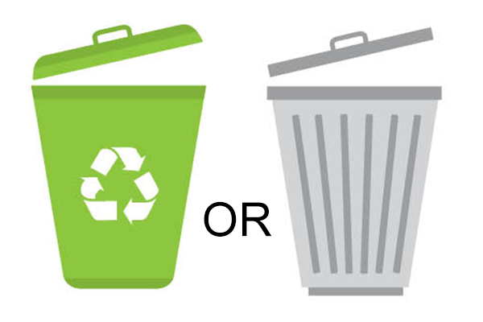
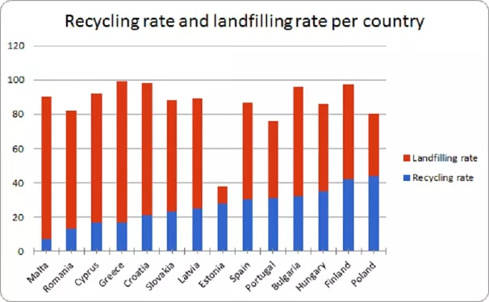

Par pārstrādi
Šeit varat uzzināt par atkritumu pārstrādi un tās nozīmi mūsu videi.
Šķirošana
Šeit varat uzzināt, kā pareizi šķirot atkritumus.
Atrikumu veidi
| Atrikumu veids | Šķirošanas metode |
|---|---|
| Plastmasa | Papīrs |
| Metāli | Stikls |
| Organiskie atkritumi | Elektroierīces |
Atkritumu šķirošana Latvijā
Lai gan vairāk nekā puse – 56% – aptaujāto atzinusi, ka šķiro sadzīves atkritumus, tomēr sabiedrības iesaistes līmenis ir samērā zems. No atkritumu šķirošanas galvenokārt cilvēkus atturot dalīto atkritumu konteineru trūkums dzīvesvietas tuvumā, kā arī ieradums visu izmest vienuviet. Šķirošanas konteineru trūkumu un nesakārtoto infrastruktūru, īpaši Rīgā, kā problēmu atzīst arī Vides aizsardzības un reģionālās attīstības ministrija (VARAM).
Meklēšana
Latvijas šķirošanas konteineri
Kontakti
Lai sazinātos ar mums, zvaniet pa tālruni 20235689 vai rakstiet uz e-pastu atkitums@hmail.com